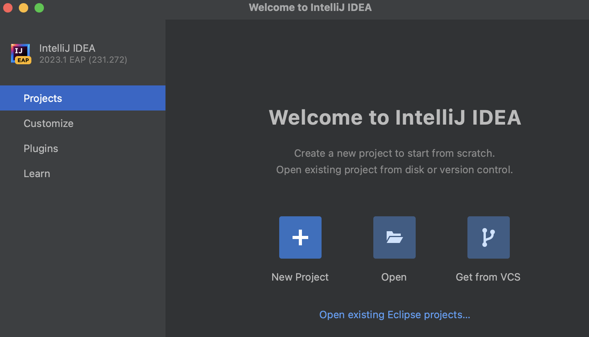
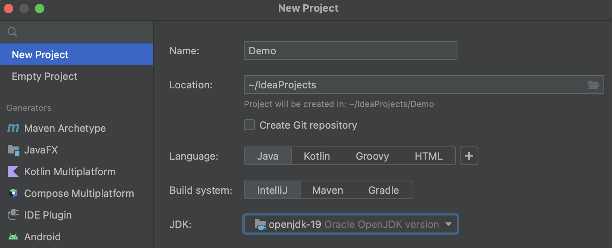
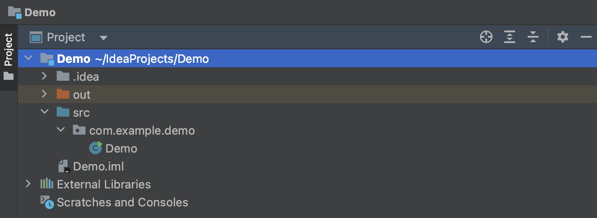
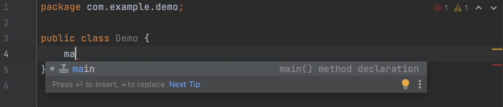
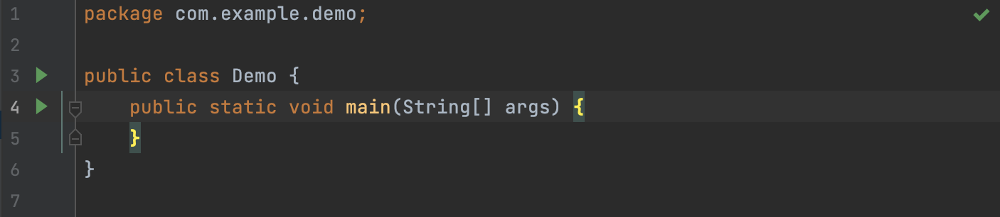
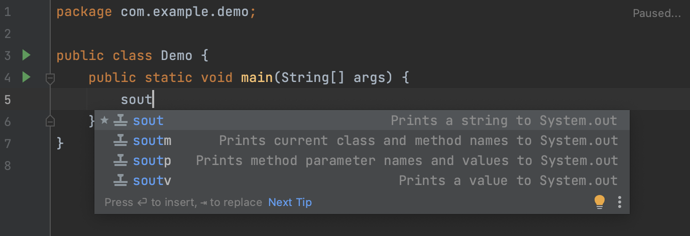
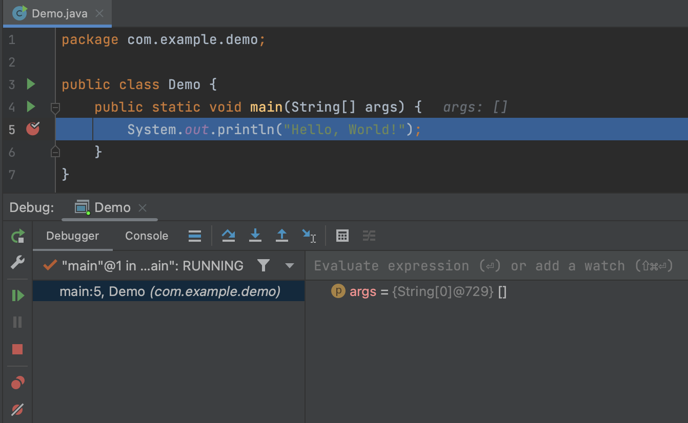
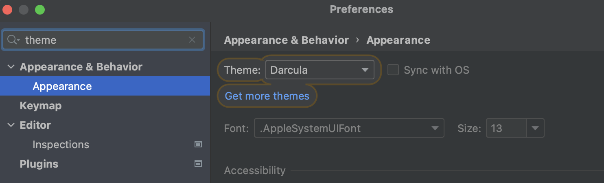

IntelliJ IDEA is the leading Java and Kotlin IDE by JetBrains.
In the industry, it stands out with:
The most advanced context-aware editor that gives you code completion hints as you type, provides fixes for errors and warnings, and lets you find anything from classes to tool windows.
In-depth code understanding guarantees that the IDE can instantly detect errors and provide relevant suggestions in every context.
Out-of-the-box experience, which means that you can start coding right from the first launch. Mission-critical tools and a wide variety of supported languages are at your fingertips – no plugin hassle involved.
Tools for collaborative and remote development.
IntelliJ IDEA comes in two editions:
IntelliJ IDEA Community Edition is a free version containing more than enough features to cover the essential needs of most Java and Kotlin development.
IntelliJ IDEA Ultimate is a full-featured commercial version that supports various frameworks and technologies for backend and frontend development. It offers an advanced toolset to streamline your workflow. There are profiling, database tools, and an HTTP client right out of the box.
IntelliJ IDEA logo
To learn more about this IDE, visit the official website .
Let's take a closer look at how the IntelliJ IDEA works. To start with, follow the steps below to create your first app in IntelliJ IDEA.
1. Install IntelliJ IDEA Community Edition on your computer and launch it.
2. If no project is currently open in IntelliJ IDEA, click on New Project in the Projects section on the Welcome screen. Otherwise, select File | New | Project.
3. In the New Project wizard, select New Project from the list on the left. There is also an option to create an empty project without language support.
4. Name the project (for example, Demo) and change the default location if necessary.
5. We're not going to work with version control systems in this tutorial, so leave the Create Git repository option disabled.
6. Select Java in Language, and IntelliJ in Build system.
7. To develop Java applications in IntelliJ IDEA, you need the Java SDK (JDK). Your IDE will fill in the JDK field automatically. But you can change it, add the necessary JDK from your computer, or download one.
8. IntelliJ IDEA creates the project. When this process is complete, the structure of your new project is shown in the Project tool window. There are two top-level nodes:
Demo. This node represents your project module. The .idea directory and the file Demo.iml are used to store configuration data for your project and module, respectively. The src directory is for your source code.
External Libraries. This category represents all the "external" resources necessary for your development work. The standard files of your project language are placed there. You can also add other resources manually.
Now we will write a simple piece of Java code for the Demo project.
First, let's create a class and a package.
1. In the
Project tool window, right-click on the
src directory, select
New (or press
⌘N), and then choose Class Java.
2. In the Name field, type com.example.demo.Demo and click on "OK". This is how you create a package. Packages are used for grouping together classes that belong to the same category or provide similar functionality.
Together with the file, IntelliJ IDEA has generated some content for your class. In this case, the IDE has inserted the package statement and the class declaration.
Second, let's write the Main method and call the println() method. You can start typing the symbols, and the IDE will prompt you about possible code variants. This feature is called code completion. With its help, IntelliJ IDEA analyzes the context and suggests the choices that are reachable from the current caret position.
But in this tutorial, let's try another way. We will add the methods with Live Templates – code snippets that you can insert into your code.
1. Place the caret at the class declaration string after the opening bracket
{ and press
⇧ ⏎ to start a new line.
2. Type
main and select the template that inserts the
main() method declaration.


As you type, IntelliJ IDEA suggests various constructs that you can use in the current context. You can see the list
of available live templates using
⌘J (macOS) or
Tab (Windows, Linux).
3. To call the
println() method, type sout and press
Enter. Inside the parentheses, type:
"Hello, World!".

Congratulations! You have written your first Java app in IntelliJ IDEA. For more information, you can always refer to the complete official tutorial.
When you have a ready-to-go program, you can run it. Then, it's possible to check it for possible problems with the help of the debugger. Let's see how these tools work.
Run:
1. Click on the green triangle
Run button (
 )
in the gutter and select
Run 'HelloWorld.main()' in the popup. The IDE will start to compile your code.
)
in the gutter and select
Run 'HelloWorld.main()' in the popup. The IDE will start to compile your code.
2. You will see the result in the Run window that appears.
Debug:
1. To test your program with the debugger, you must first set a breakpoint. Click on the gutter at the executable
line
of code where you want to set the breakpoint. Alternatively, place the caret at the line and press
⌘F8 (macOS) or
Ctrl+F8 (Windows, Linux).
2. To run the debugger, click on the Bug button next to the Run one. The Debugger window will then appear with the result.
There are many settings that you can configure based on what you want or need.
1. To configure your IDE, select IntelliJ IDEA | Preferences (macOS) or File | Settings (Windows and Linux). For example, go to Appearance & Behavior | Appearance and choose different themes. In this topic, we use Darcula.
2. If you want to find something specific in the settings, use the search box as shown below.
To summarize this general introduction to IntelliJ IDEA, we can say that this IDE suits you perfectly if you:
Want to start coding just several minutes after installation and access all the crucial features right away.
Enjoy working in a powerful, ergonomic editor that can predict what code you need to write in a specific context and offers fixes to possible problems on the go.
Like to customize the IDE to your needs and taste.
Appreciate fast navigation and instant search.
We hope you try out IntelliJ IDEA to discover more of its features. For more detailed information, you can refer to IntelliJ IDEA Help.